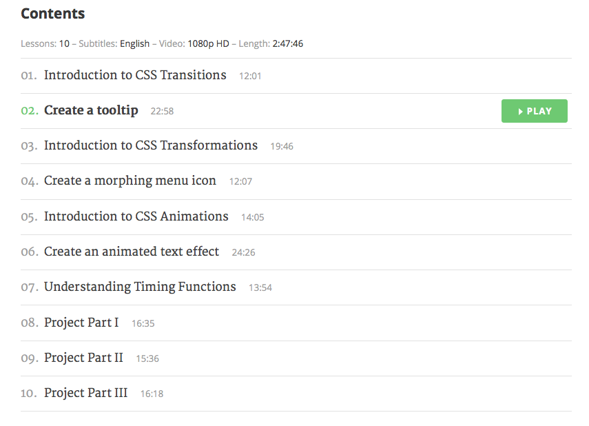

剛剛收到一封 codyhouse 的線上課程通知，這一期他們推廣的是 CSS animation 應用，好奇點進去後發現有一堂課程是免費的，所以就打開來聽聽看啦 ～
▼ 有 play 可以選的 tooltip 就是這期的免費課程啦

花了半小時聽完後覺得受益良多，雖然講者的口音有點重，但可以把影片字幕打開，也可以直接看程式碼，聽完之後也是對其他付費課程有所心動 XD，非常棒的行銷手法呢，先試聽一堂課喜歡再買